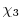

Next:
List of Figures
Up:
MODELLER A Program for
Previous:
MODELLER A Program for
Index
Contents
List of Figures
List of Tables
Introduction
What is MODELLER?
MODELLER bibliography
Obtaining and installing the program
Bug reports
Method for comparative protein structure modeling by MODELLER
Using MODELLER for comparative modeling
Preparing input files
Running MODELLER
Automated comparative modeling with automodel
Simple usage
More advanced usage
Including water molecules, HETATM residues, and hydrogen atoms
Changing the default optimization and refinement protocol
Getting a very fast and approximate model
Building a model from multiple templates
Building an all hydrogen model
Refining only part of the model
Including disulfide bridges
Providing your own restraints file
Using your own initial model
Adding additional restraints to the defaults
Building multi-chain models with symmetry
Accessing output data after modeling is complete
Fully automated alignment and modeling
Loop optimization
Automatic loop refinement after model building
Defining loop regions for refinement
Refining an existing PDB file
Frequently asked questions and history
Frequently asked questions (FAQ) and examples
MODELLER updates
Changes since release 9v7
Changes since release 9v6
Comparative modeling class reference
automodel reference
automodel() -- prepare to build one or more comparative models
automodel.library_schedule -- select optimization schedule
automodel.md_level -- control the model refinement level
automodel.outputs -- all output data for generated models
automodel.rand_method -- control initial model randomization
automodel.generate_method -- control initial model generation
automodel.max_var_iterations -- select length of optimizations
automodel.repeat_optimization -- number of times to repeat optimization
automodel.max_molpdf -- objective function cutoff
automodel.initial_malign3d -- initial template alignment
automodel.starting_model -- first model to build
automodel.ending_model -- last model to build
automodel.final_malign3d -- final template-model alignment
automodel.write_intermediates -- write intermediate files during optimization
automodel.trace_output -- control optimization output
automodel.max_ca_ca_distance -- Distance cutoff for CA-CA homology-derived restraints
automodel.max_n_o_distance -- Distance cutoff for N-O homology-derived restraints
automodel.max_sc_mc_distance -- Distance cutoff for sidechain-mainchain homology-derived restraints
automodel.max_sc_sc_distance -- Distance cutoff for sidechain-sidechain homology-derived restraints
automodel.get_optimize_actions() -- get actions to carry out during the initial optimization
automodel.get_refine_actions() -- get actions to carry out during the refinement
automodel.select_atoms() -- select region for optimization
automodel.auto_align() -- generate an automatic initial alignment
automodel.very_fast() -- request rapid optimization
automodel.make() -- build all models
automodel.cluster() -- cluster all built models
automodel.special_restraints() -- add additional restraints
automodel.nonstd_restraints() -- add restraints on ligands
automodel.special_patches() -- add additional patches to the topology
automodel.user_after_single_model() -- analyze or refine each model
automodel.get_model_filename() -- get the model PDB name
automodel.use_parallel_job() -- parallelize model building
allhmodel reference
allhmodel() -- prepare to build all-hydrogen models
loopmodel reference
loopmodel() -- prepare to build models with loop refinement
loopmodel.loop.md_level -- control the loop model refinement level
loopmodel.loop.max_var_iterations -- select length of optimizations
loopmodel.loop.library_schedule -- select optimization schedule
loopmodel.loop.starting_model -- first loop model to build
loopmodel.loop.ending_model -- last loop model to build
loopmodel.loop.write_selection_only -- write PBDs containing only the loops
loopmodel.loop.outputs -- all output data for generated loop models
loopmodel.select_loop_atoms() -- select region for loop optimization
loopmodel.get_loop_model_filename() -- get the model PDB name
loopmodel.user_after_single_loop_model() -- analyze or refine each loop model
loopmodel.read_potential() -- read in the loop modeling potential
loopmodel.build_ini_loop() -- create the initial conformation of the loop
dope_loopmodel reference
dope_loopmodel() -- prepare to build models with DOPE loop refinement
dopehr_loopmodel reference
MODELLER general reference
Miscellaneous rules and features of MODELLER
MODELLER system
Controlling breakpoints and the amount of output
File naming
File types
Stereochemical parameters and molecular topology
Modeling residues with non-existing or incomplete entries in the topology and parameter libraries
Spatial restraints
Specification of restraints
Specification of pseudo atoms
Excluded pairs
Rigid bodies
Symmetry restraints
MODELLER command reference
Key for command descriptions
The environ class: MODELLER environment
environ() -- create a new MODELLER environment
environ.io -- default input parameters
environ.edat -- default objective function parameters
environ.libs -- MODELLER libraries
environ.schedule_scale -- energy function scaling factors
environ.dendrogram() -- clustering
environ.principal_components() -- clustering
environ.system() -- execute system command
environ.make_pssmdb() -- Create a database of PSSMs given a list of profiles
The energy_data class: objective function parameters
energy_data() -- create a new set of objective function parameters
energy_data.contact_shell -- nonbond distance cutoff
energy_data.update_dynamic -- nonbond recalculation threshold
energy_data.sphere_stdv -- soft-sphere standard deviation
energy_data.dynamic_sphere -- calculate soft-sphere overlap restraints
energy_data.dynamic_lennard -- calculate Lennard-Jones restraints
energy_data.dynamic_coulomb -- calculate Coulomb restraints
energy_data.dynamic_modeller -- calculate non-bonded spline restraints
energy_data.excl_local -- exclude certain local pairs of atoms
energy_data.radii_factor -- scale atomic radii
energy_data.lennard_jones_switch -- Lennard-Jones switching parameters
energy_data.coulomb_switch -- Coulomb switching parameters
energy_data.relative_dielectric -- relative dielectric
energy_data.covalent_cys -- use disulfide bridges in residue distance
energy_data.nonbonded_sel_atoms -- control interaction with picked atoms
energy_data.nlogn_use -- select non-bond list generation algorithm
energy_data.energy_terms -- user-defined global energy terms
The io_data class: coordinate file input parameters
io_data() -- create a new input parameters object
io_data.hetatm -- whether to read HETATM records
io_data.hydrogen -- whether to read hydrogen atoms
io_data.water -- whether to read water molecules
io_data.atom_files_directory -- search path for coordinate files
The Libraries class: stereochemical parameters and molecular topology
Libraries.topology -- topology library information
Libraries.parameters -- parameter library information
Topology.append() -- append residue topology library
Topology.clear() -- clear residue topology library
Topology.read() -- read residue topology library
Parameters.append() -- append parameters library
Parameters.clear() -- clear parameters library
Parameters.read() -- read parameters library
Topology.make() -- make a subset topology library
Topology.submodel -- select topology model type
Topology.write() -- write residue topology library
The model class: handling of atomic coordinates, and model building
model() -- create a new 3D model
model.seq_id -- sequence identity between the model and templates
model.resolution -- resolution of protein structure
model.last_energy -- last objective function value
model.remark -- text remark(s)
model.restraints -- all static restraints which act on the model
model.group_restraints -- all restraints which act on atom groups
model.atoms -- all atoms in the model
model.point() -- return a point in Cartesian space
model.atom_range() -- return a subset of all atoms
model.residue_range() -- return a subset of all residues
model.get_insertions() -- return a list of all insertions
model.get_deletions() -- return a list of all deletions
model.loops() -- return a list of all loops
model.read() -- read coordinates for MODEL
model.build_sequence() -- build model from a sequence of one-letter codes
model.write() -- write MODEL
model.clear_topology() -- clear model topology
model.generate_topology() -- generate MODEL topology
model.write_psf() -- write molecular topology to PSF file
model.patch() -- patch MODEL topology
model.patch_ss_templates() -- guess MODEL disulfides from templates
model.patch_ss() -- guess MODEL disulfides from model structure
model.build() -- build MODEL coordinates from topology
model.transfer_xyz() -- copy templates' coordinates to MODEL
model.res_num_from() -- residue numbers from MODEL2 to MODEL
model.rename_segments() -- rename MODEL segments
model.to_iupac() -- standardize certain dihedral angles
model.reorder_atoms() -- standardize order of MODEL atoms
model.orient() -- center and orient MODEL
model.write_data() -- write derivative model data
model.make_region() -- define a random surface patch of atoms
model.color() -- color MODEL according to alignment
model.make_chains() -- Fetch sequences from PDB file
model.saxs_intens() -- Calculate SAXS intensity from model
model.saxs_pr() -- Calculate
of model
model.saxs_chifun() -- Calculate SAXS score chi from model
model.assess_ga341() -- assess a model with the GA341 method
model.assess_normalized_dope() -- assess a model with the normalized DOPE method
The Restraints class: static restraints
Restraints.rigid_bodies -- all rigid bodies
Restraints.pseudo_atoms -- all pseudo atoms
Restraints.excluded_pairs -- all excluded pairs
Restraints.nonbonded_pairs -- all nonbonded pairs
Restraints.symmetry -- all symmetry restraints
Restraints.symmetry.report() -- report violated symmetry restraints
Restraints.make() -- make restraints
Restraints.make_distance() -- make distance restraints
Restraints.unpick_all() -- unselect all restraints
Restraints.clear() -- delete all restraints
Restraints.pick() -- pick restraints for selected atoms
Restraints.unpick_redundant() -- unselect redundant restraints
Restraints.remove_unpicked() -- remove unselected restraints
Restraints.condense() -- remove unselected or redundant restraints
Restraints.add() -- add restraint
Restraints.unpick() -- unselect restraints
Restraints.reindex() -- renumber model restraints using another model
Restraints.spline() -- approximate restraints by splines
Restraints.append() -- read spatial restraints
Restraints.write() -- write spatial restraints
The secondary_structure module: secondary structure restraints
alpha() -- make an
-helix
strand() -- make a
-strand
sheet() -- make a
-sheet
The selection class: handling of sets of atom coordinates
selection() -- create a new selection
selection.add() -- add objects to selection
selection.extend_by_residue() -- extend selection by residue
selection.by_residue() -- make sure all residues are fully selected
selection.select_sphere() -- select all atoms within radius
selection.only_mainchain() -- select only mainchain atoms
selection.only_sidechain() -- select only sidechain atoms
selection.only_atom_types() -- select only atoms of given types
selection.only_residue_types() -- select only atoms of given residue type
selection.only_std_residues() -- select only standard residues
selection.only_no_topology() -- select only residues without topology
selection.only_het_residues() -- select only HETATM residues
selection.only_water_residues() -- select only water residues
selection.only_defined() -- select only atoms with defined coordinates
selection.write() -- write selection coordinates to a file
selection.translate() -- translate all coordinates
selection.rotate_origin() -- rotate coordinates about origin
selection.rotate_mass_center() -- rotate coordinates about mass center
selection.transform() -- transform coordinates with a matrix
selection.mutate() -- mutate selected residues
selection.randomize_xyz() -- randomize selected coordinates
selection.superpose() -- superpose model on selection given alignment
selection.rotate_dihedrals() -- change dihedral angles
selection.unbuild() -- undefine coordinates
selection.hot_atoms() -- atoms violating restraints
selection.energy() -- evaluate atom selection given restraints
selection.debug_function() -- test code self-consistency
selection.assess_dope() -- assess a model selection with the DOPE method
selection.assess_dopehr() -- assess a model with the DOPE-HR method
The physical module: contributions to the objective function
physical.values() -- create a new set of physical values
The optimizers module: optimization of the model
conjugate_gradients() -- optimize atoms given restraints, with CG
quasi_newton() -- optimize atoms with quasi-Newton minimization
molecular_dynamics() -- optimize atoms given restraints, with MD
actions.write_structure() -- write out the model coordinates
actions.trace() -- write out optimization energies, etc
actions.charmm_trajectory() -- write out a CHARMM trajectory
User-defined optimizers
The schedule class: variable target function optimization
schedule() -- create a new schedule
schedule.make_for_model() -- trim a schedule for a model
schedule.write() -- write optimization schedule
The group_restraints class: restraints on atom groups
group_restraints() -- create a new set of group restraints
group_restraints.append() -- read group restraint parameters
The gbsa module: implicit solvation
gbsa.Scorer() -- create a new scorer to evaluate GB/SA energies
The alignment class: comparison of sequences and structures
alignment() -- create a new alignment
alignment.comments -- alignment file comments
alignment.append() -- read sequences and/or their alignment
alignment.clear() -- delete all sequences from the alignment
alignment.read_one() -- read sequences one by one from a file
alignment.check_structure_structure() -- check template structure superpositions
alignment.check_sequence_structure() -- check sequence/structure alignment for sanity
alignment.check() -- check alignment for modeling
alignment.compare_with() -- compare two alignments
alignment.append_model() -- copy model sequence and coordinates to alignment
alignment.append_sequence() -- add a sequence from one-letter codes
alignment.append_profile() -- add profile sequences to the alignment
alignment.write() -- write sequences and/or their alignment
alignment.edit() -- edit overhangs in alignment
alignment.describe() -- describe proteins
alignment.id_table() -- calculate percentage sequence identities
alignment.compare_sequences() -- compare sequences in alignment
alignment.align() -- align two (blocks of) sequences
alignment.align2d() -- align sequences with structures
alignment.malign() -- align two or more sequences
alignment.consensus() -- consensus sequence alignment
alignment.compare_structures() -- compare 3D structures given alignment
alignment.align3d() -- align two structures
alignment.malign3d() -- align two or more structures
alignment.salign() -- align two or more sequences/structures of proteins
alignment.get_suboptimals() -- parse suboptimal alignments file
alignment.to_profile() -- convert alignment to profile format
alignment.segment_matching() -- align segments
The Sequence class: a single sequence within an alignment
Sequence.range -- residue range
Sequence.code -- alignment code
Sequence.atom_file -- PDB file name
Sequence.source -- source organism
Sequence.name -- protein name
Sequence.prottyp -- protein sequence type
Sequence.resolution -- structure resolution
Sequence.rfactor -- R factor
Sequence.residues -- list of all residues in the sequence
Sequence.chains -- list of all chains in the sequence
Sequence.transfer_res_prop() -- transfer residue properties
Sequence.get_num_equiv() -- get number of equivalences
Sequence.get_sequence_identity() -- get sequence identity
The Structure class: a template structure within an alignment
Structure.write() -- write out PDB file
Structure.reread() -- reread coordinates from atom file
The Chain class: a single chain in a model or alignment
Chain.name -- chain ID
Chain.residues -- all residues in the chain
Chain.atoms -- all atoms in the chain
Chain.filter() -- check if this chain passes all criteria
Chain.write() -- write out chain sequence to an alignment file
Chain.atom_file_and_code() -- get suitable names for this chain
Chain.join() -- join other chain(s) onto this one
The Residue class: a single residue in a model or alignment
Residue.name -- internal (CHARMM) residue type name
Residue.pdb_name -- PDB (IUPAC) type name
Residue.code -- One-letter residue type code
Residue.hetatm -- HETATM indicator
Residue.index -- internal integer index
Residue.num -- PDB-style residue number
Residue.curvature -- Mainchain curvature
Residue.atoms -- all atoms in the residue
Residue.chain -- chain object
Residue.phi -- dihedral angle
Residue.psi --
dihedral angle
Residue.omega --
dihedral angle
Residue.alpha --
dihedral angle
Residue.chi1 --
dihedral angle
Residue.chi2 --
dihedral angle
Residue.chi3 --  dihedral angle
Residue.chi4 --
dihedral angle
Residue.chi5 --
dihedral angle
Residue.get_aligned_residue() -- get aligned residue in another sequence
Residue.add_leading_gaps() -- add gap(s) before this residue
Residue.add_trailing_gaps() -- add gap(s) after this residue
Residue.remove_leading_gaps() -- remove gap(s) before this residue
Residue.remove_trailing_gaps() -- remove gap(s) after this residue
Residue.get_leading_gaps() -- get number of gaps before this residue
Residue.get_trailing_gaps() -- get number of gaps after this residue
The Dihedral class: a single dihedral in a model or alignment
Dihedral.value -- current value in degrees
Dihedral.atoms -- atoms defining the angle
Dihedral.dihclass -- integer dihedral class
The Point class: a point in Cartesian space
Point.x -- x coordinate
Point.select_sphere() -- select all atoms within radius
The Atom class: a single atom in a model or structure
Atom.dvx -- objective function derivative
Atom.vx -- x component of velocity
Atom.biso -- isotropic temperature factor
Atom.occ -- occupancy
Atom.charge -- electrostatic charge
Atom.mass -- mass
Atom.name -- PDB name
Atom.element -- Element symbol
Atom.residue -- residue object
The profile class: using sequence profiles
profile() -- create a new profile
profile.read() -- read a profile of a sequence
profile.write() -- write a profile
profile.to_alignment() -- profile to alignment
profile.scan() -- Compare a target profile against a database of profiles
profile.build() -- Build a profile for a given sequence or alignment
pssmdb() -- create a new PSSM database
pssmdb.read() -- read a PSSM database from a file
The sequence_db class: using sequence databases
sequence_db() -- create a new sequence database
sequence_db.read() -- read a database of sequences
sequence_db.write() -- write a database of sequences
sequence_db.convert() -- convert a database to binary format
sequence_db.search() -- search for similar sequences
sequence_db.filter() -- cluster sequences by sequence-identity
The density class: handling electron microscopy density data
density() -- create a new density map
density.read() -- read an EM (electron microscopy) density map file
density.grid_search() -- dock a structure into an EM (electron microscopy) density map
The saxsdata class: using small-angle X-ray (SAXS) data
saxsdata() -- create a new saxsdata structure
saxsdata.ini_saxs() -- Initialization of SAXS data
saxsdata.saxs_read() -- Read in SAXS data
saxsdata.saxs_pr_read() -- Read in P(r) data
The info object: obtaining information about the MODELLER build
info.version -- the full MODELLER version number
info.version_info -- the version number, as a tuple
info.build_date -- the date this binary was built
info.exe_type -- the executable type of this binary
info.debug -- this binary's debug flag
info.bindir -- MODELLER binary directory
info.time_mark() -- print current date, time, and CPU time
info.jobname -- name of the current job
The log object: controlling the amount of output
log.level() -- Set all log output levels
log.none() -- display no log output
log.minimal() -- display minimal log output
log.verbose() -- display verbose log output
log.very_verbose() -- display verbose log output, and dynamic memory information
The modfile module: handling of files
modfile.default() -- generate an `automatic' filename
modfile.delete() -- delete a file
modfile.inquire() -- check if file exists
modfile.File() -- open a handle to a MODELLER file
The scripts module: utility scripts
cispeptide() -- creates cis-peptide stereochemical restraints
complete_pdb() -- read a PDB file, and fill in any missing atoms
The salign module: high-level usage of SALIGN
iterative_structural_align() -- obtain the best structural alignment
Parallel job support
job() -- create a new parallel job
sge_pe_job() -- create a job using all Sun GridEngine (SGE) slave processes
sge_qsub_job() -- create a job which can be expanded with Sun GridEngine 'qsub'
job.slave_startup_commands -- Slave startup commands
job.queue_task() -- submit a task to run within the job
job.run_all_tasks() -- run all queued tasks, and return results
job.yield_tasks_unordered() -- run all queued tasks, and yield unordered results
job.start() -- start all slaves for message-passing
Communicator.send_data() -- send data
Communicator.get_data() -- get data
slave.run_cmd() -- run a command on the slave
local_slave() -- create a slave running on the local machine
sge_pe_slave() -- create a slave running on a Sun GridEngine parallel environment slave node
sge_qsub_slave() -- create a 'qsub' slave running on a Sun GridEngine node
ssh_slave() -- create a slave on a remote host accessed via ssh
MODELLER low-level programming
User-defined features and restraint forms
User-defined feature types
User-defined restraint forms
User-defined energy terms
MODELLER programming interface (API)
Methods
Dynamic programming for sequence and structure comparison and searching
Pairwise comparison
Variable gap penalty
Local versus global alignment
Similarity versus distance scores
Multiple comparisons
Optimization of the objective function by MODELLER
Function
Optimizers
Equations used in the derivation of the molecular pdf
Features and their derivatives
Restraints and their derivatives
Flowchart of comparative modeling by MODELLER
Loop modeling method
File formats
Alignment file (PIR)
Restraints file
Restraints
Excluded pairs
Pseudo atoms
Symmetry restraints
Rigid bodies
Profile file
Binary files
Converting TOP scripts from old MODELLER versions
Running old scripts unchanged
Converting TOP scripts to Python
TOP commands and variables
TOP models and alignments
TOP to Python correspondence
Bibliography
Index
Automatic builds 2010-04-21